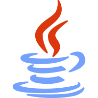
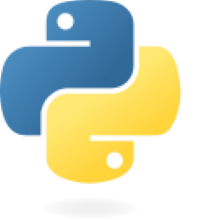
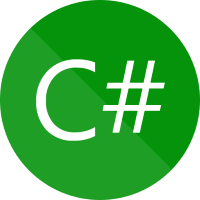

About Backend Programming And My Experience With It

Backend Programming
Backend programming refers to the development of the server-side logic and infrastructure of a software application or website. It involves the creation and management of the behind-the-scenes functionality that enables the frontend (user-facing) components to interact with databases, external services, and other resources.
The backend of an application typically handles tasks such as data storage, retrieval, and manipulation, as well as the processing of requests and responses between the client-side (frontend) and the server. It involves working with various technologies, programming languages, frameworks, and databases to build the server-side components that power the application.
Overall, backend programming focuses on building the server-side components that handle data processing, business logic, and interactions with databases and external services to provide the necessary functionality for an application or website.
Java
Java is used in a wide range of applications, including desktop software, web development, mobile app development (Android), enterprise systems, scientific computing, and more.
Skill Level: 
Examples Of Projects Where I Used Java:

PHP
PHP (Hypertext Preprocessor) is a popular server-side scripting language designed for web development. It is widely used for creating dynamic web pages and building web applications. PHP is an open-source language, meaning it is freely available for developers to use, modify, and distribute.
Skill Level:
Examples Of Projects Where I Used PHP:
Python
Python is widely used across various domains, including web development, data analysis, scientific computing, artificial intelligence, machine learning, automation, scripting, and more.
Skill Level: 
Examples Of Projects Where I Used Python/Python Libraries:
C#
C# (pronounced "C sharp") is a popular object-oriented programming (OOP) language developed by Microsoft. It was created as part of the .NET framework and is widely used for developing a variety of applications, including desktop software, web applications, mobile apps, games, and more.
Skill Level:
Examples Of Projects Where I Used C#:
SQL
SQL (Structured Query Language) is a standard programming language used for managing and manipulating relational databases and database structures (tables, views, indexes, etc.).
Skill Level: 
Examples Of Projects Where I Used SQL:
Server-Side Logic
Backend developers write code to implement the business logic and algorithms required for the application to function properly. This includes handling user authentication, authorization, session management, and application workflows.
Skill Level:
Database Management
Backend developers work with databases to store and retrieve data efficiently. They design database schemas, write queries, and optimize database performance.
Skill Level:
APIs & Web Services
Backend programming involves building application programming interfaces (APIs) and web services that allow communication between different software systems. This enables the frontend to interact with backend resources and retrieve data or perform actions.
Skill Level: 
Security
Backend developers implement security measures to protect data and prevent unauthorized access. This includes handling user authentication, input validation, encryption, and implementing security best practices.
Skill Level:
Performance Optimization:
Backend programmers optimize the performance of server-side code, database queries, and overall system architecture to ensure the application runs smoothly, handles concurrent requests, and scales effectively.
Skill Level:
External Service Integration:
Backend development often involves integrating with third-party services such as payment gateways, social media platforms, or external APIs to enhance the functionality of the application.
Skill Level: